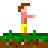
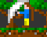
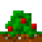
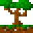
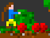
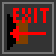
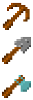
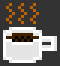
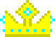

|  | This is you. You can move to the left with 'a' and to the right with 'd'. |
| This is your health. If it drops to zero, you are dead. |
| This is your saturation, which will be converted to health if you are wounded. |
|  | Press 's' to hit things. |
|  | This is a bush. Hit it and it will drop apples. Bushes slowly regrow apples. |
|  | This is a tree. Hit it to chop. Beware, it will take a while if using your bare hands. Trees drop saplings which can grow into new trees. |
|  | Gather items by running over them. |
|  | The action menu. Can be opened with 'w'. Select an action with 'a' and 'd', then invoke it with 's'. If you don't want any action, use the 'exit' action or just press 'w' again. There are different places and times for different actions - for example, you cannot eat an apple if you are full and you cannot plant a sapling onto rock. |
|  | Later in the game you can craft tools. There are three tools and one weapon:- Axe - Press '1'
- Shovel - Press '2'
- Pickaxe - Press '3'
- Sword - Press '4'
The game will choose the best available tool of the chosen type automatically for you. Better tools are faster, do more damage, or something. |
| After some time, zombies attack. Be sure to be prepared! |
|  | If you want a break, just press 'p'. To continue playing, click the button or press 'p' again. |
|  | To win the game, you must craft the crown of epic nerdiness. It costs 8 gold and 3 diamonds. |